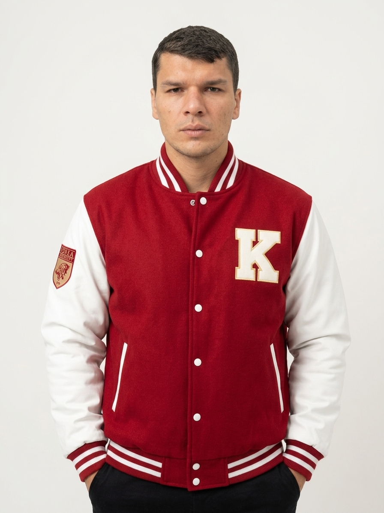

AI Researcher · Multimodal Learning · Medical Imaging · Explainable AI
Hello — I'm Naveed. I design deep learning systems that help doctors see what the human eye might miss. My work sits at the intersection of medical imaging, multimodal AI, and transparency — because the best algorithms aren't just accurate, they're trustworthy.
The person behind the research — what drives me, where I come from, and what I care about.

I'm an AI researcher who genuinely believes that technology's highest purpose is to serve people. For me, that means building deep learning systems that don't just classify images — they help clinicians make earlier, more confident decisions about the people who depend on them.
My journey started with a simple question: "Can a neural network see what a radiologist might overlook?" That curiosity led me to co-author a Q1 journal paper on Multi-view Deep Learning for Early Alzheimer's Detection, published in Image and Vision Computing (IF 4.2). Working on this research taught me something profound: the most impactful AI isn't the one with the highest accuracy — it's the one whose decisions a clinician can understand and trust.
Today, I'm captivated by the promise of multimodal AI and vision-language models in healthcare. I imagine a future where systems can reason across MRI scans, clinical notes, and patient history together — and explain their reasoning in plain language. That's the future I want to help build, and I'm actively seeking a Master's (and eventually PhD) position where I can pursue this vision with guidance from researchers who share this ambition.
Outside the lab, you'll find me on the football pitch — I've led my university team to two championships — or mentoring new learners on SoloLearn, where I've been part of the community for over five years. I believe the same discipline that makes a good captain makes a good researcher: show up consistently, lift your team, and keep learning.
Three directions that excite me most — and where I hope to contribute meaningfully as a graduate student.
Developing diagnostic models that don't just predict, but explain why. I want to push Explainable AI techniques so clinicians can see exactly which regions of a scan drove a model's decision.
Bridging vision, language, and structured clinical data. A patient is more than an MRI — I'm exploring how vision-language models can integrate multiple data sources for richer, more holistic diagnostic support.
Research that travels from the lab to the clinic. I care deeply about building systems that are robust, fair, and practical — algorithms that actually help doctors and patients, not just impress on benchmarks.
My first peer-reviewed contribution — and the start of what I hope will be a lifelong journey in medical AI research.
We built a multi-view deep learning framework that catches the subtle transition from Mild Cognitive Impairment to Alzheimer's Disease using multi-modal MRI data. What makes this work meaningful to me isn't just the improved accuracy — it's that we paired it with explainability techniques, so the model shows which features in the scan mattered most. That bridge between performance and transparency is exactly the kind of research I want to keep doing.
The technologies I work with daily — from model building to deployment.
From mobile apps to ML experiments — each project taught me something new about building things that matter.
A Flutter client-server app that modernizes how tailor shops operate. Built an admin panel for managing orders and measurements, plus a client interface for browsing tailors, placing orders, and tracking them in real time. My first taste of building something people actually use daily.
An ML pipeline that predicts driver actions — acceleration, braking, turning — purely from speed patterns. Taught me how structured data and careful feature engineering can reveal meaningful behavioral insights, even from seemingly simple signals.
Where my ML journey really clicked. Implemented and benchmarked multiple classifiers on the Iris dataset with thorough feature analysis and clean visualizations. Sometimes the classics teach you the most — this project made me fall in love with rigorous experimentation.
A Java desktop application for managing employee records, attendance, and payroll. Deepened my understanding of object-oriented design, SQL persistence, and what it takes to build maintainable enterprise-style software.
The experiences that shaped me — academically, professionally, and personally.
Milestones that remind me why I keep showing up.
If you're a professor whose work aligns with mine — or if you just want to chat about medical AI, multimodal learning, or research opportunities — my inbox is open. I'm actively seeking a Master's position where I can contribute meaningfully to your lab while growing as a researcher. Let's see if we might be a good fit.